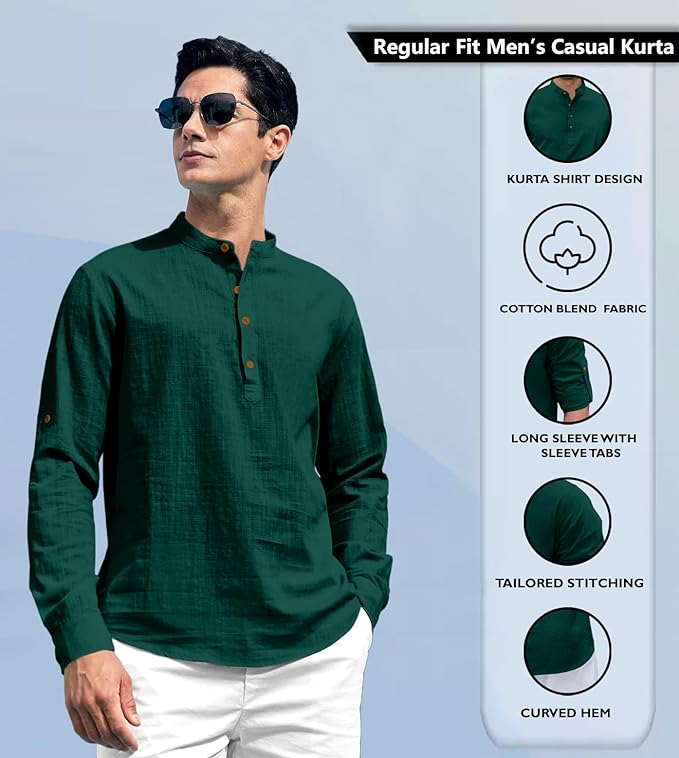
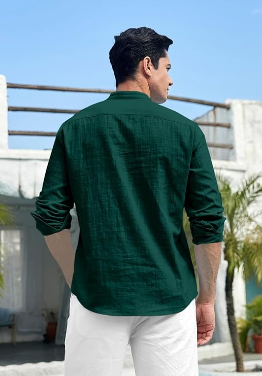
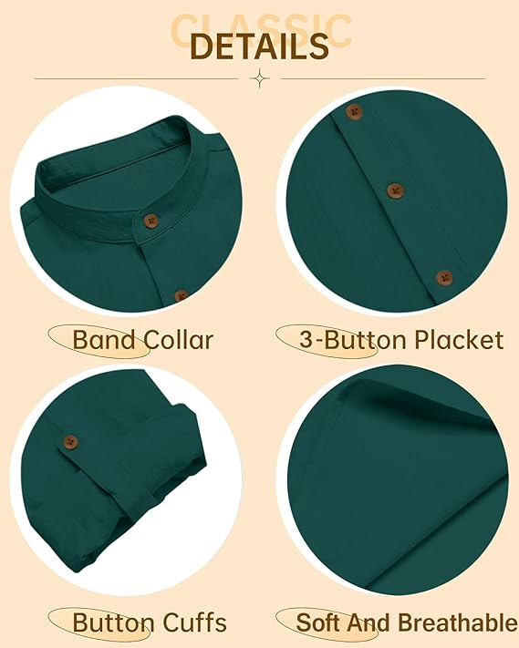
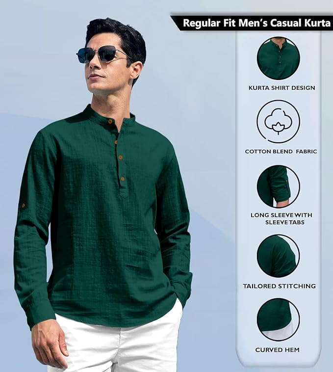
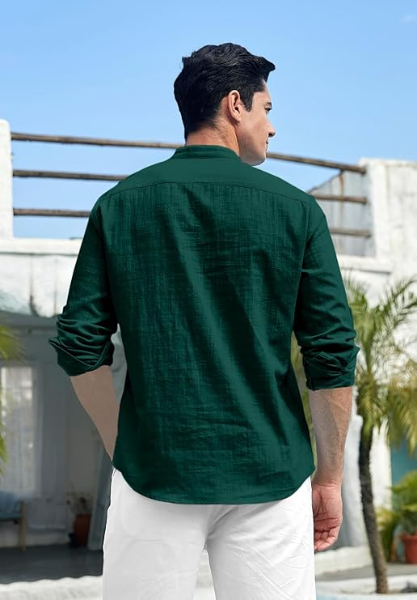
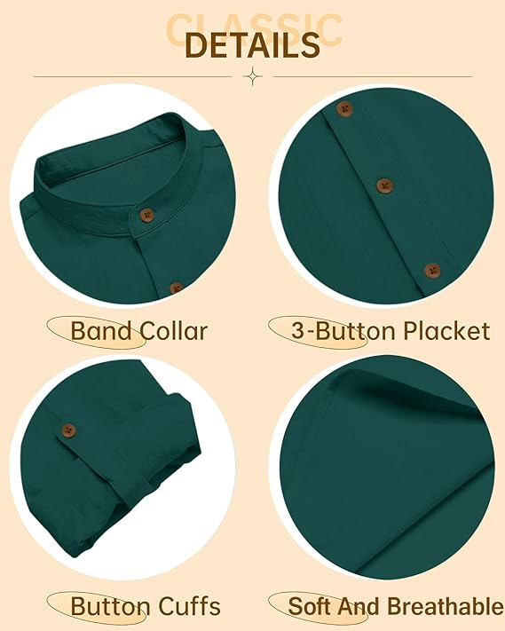
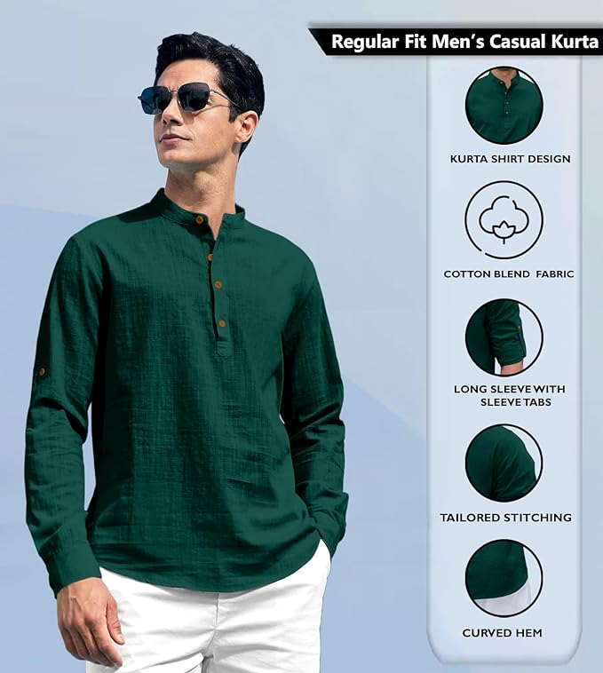
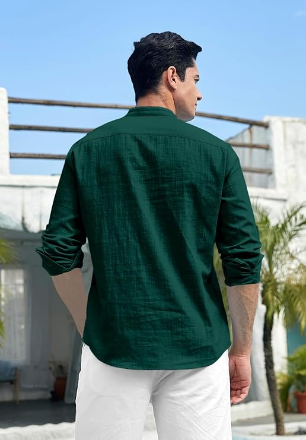
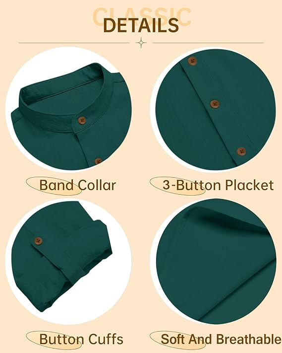

Zombom
Chinese Collor Short Kurta
Rs.1711 Rs.3499 ( 52% off )select size



Chinese Collor Short Kurta
Rs.1711 Rs.3499 ( 52% off )select size
Designed for the urban man, Zombom Casual Kurta Shirt is the perfect pick for a casual, yet classy expression. Made of cotton polyester blend, the fabric is soft on the skin to provide all day comfort. It features a curved hemline and offers a relaxing fit that accentuates a neat look. Whatever the occasion, exude confidence in style with this fashionable shirt. Soft and comfortable to wear, the fabric is breathable and easy on the skin- providing a cool effect to keep you relaxed throughout the day. The Kurta shirt is styled with a solid tone, long sleeves and a straight collar. Checkered prints lined along the button placket, collar and cuffs create a distinctive casual appeal. The contrasting print on the inner cuffs allow you to switch from a professional look to a relaxed casual appearance when folded. This casual modern fit shirt has a curved hemline with stitched borders. It not only ensures a durability to the seams but also accentuates the stylish and casual look of the Kurta shirt. You can go casual and keep it outside or go formal and tuck it in. The casual Kurta shirt from Zombom is tailored to offer a regular and smart fit. These shirts are stitched in our own factory with care. The fit is very modern with very durable threads used for stitching. All Kurta shirts are cut from machines which bring to you the perfect fit and make sure each shirt is the same.